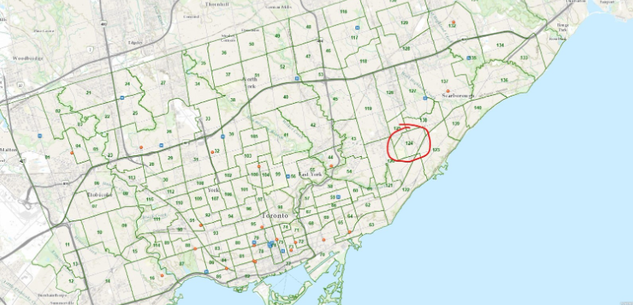

Neighbourhood Analysis
Solo Project
*****
March 2026
Overview
This analysis was done for a seminar class I took, UNI103, aka Gradients of Health in the Urban Mosaic. It was mainly about
how urbanism impacts health in the city of Toronto, which is comprised of at least 140 distinct neighbourhoods (yes even though I've lived in Toronto
my whole life I was not aware of this). We learnt quite a bit about the different factors that affect the diverse communities within Toronto,
such as disparities between and within neighbourhoods, changing economic conditions in the city, the evolving demographics of Toronto's population, and
municipal, provincial, and federal government policies.
So in this analysis specifically, my job was to analyze all dynamics of any specific neighbourhood. So naturally, I choose
the one where I've lived all my life - Kennedy Park.
- Conducted an independent research investigation analyzing social and environmental determinants of health in a Toronto neighbourhood
- Searched through 25+ academic, government, and public health sources to construct a multidimensional report on demographic, economic, environmental, and healthcare access situation of the neighbourhood
- Analyzed relationships between urban infrastructure, socioeconomic conditions, and health outcomes
- Compared neighbourhood-level indicators using Toronto Open Data and public health datasets
Neighborhood Analysis: Kennedy Park
Disclaimer: Information in this essay is based on the most recent data collected by the City of Toronto; for some elements, 2014/2016, and some as recent as 2025.
Toronto, also known as the “city of neighbourhoods,” is a wide range of communities that make up the city. While many people may be familiar with the ‘larger regions’, such as downtown Toronto, Scarborough, North York, or Etobicoke, the City of Toronto officially recognizes 158 individual neighbourhoods. These neighbourhoods vary in terms of income levels, living conditions, population demographics, and access to services, all of which influence the health and well-being of its residents.
Having lived here my entire life, specifically in Scarborough, I was not aware of Toronto’s neighbourhood system myself. However, through this course, I have learned that health outcomes and quality of life can vary significantly even within these small areas. This essay will examine the Kennedy Park neighbourhood, located in central Scarborough, and explore how its demographics, living conditions, transportation infrastructure, environmental conditions, and access to services shape the health of its residents.
So firstly, how is a neighbourhood chosen? The City of Toronto divides the municipality into neighbourhoods to help with urban planning, research, and the allocation of resources. They define them based on geographic boundaries such as major roads, railways, and natural features. This system allows the city to track local patterns in population characteristics, economic conditions, and public health indicators.
Location
Kennedy Park, marked as Neighbourhood 124 on the Toronto map, is located in the heart of Scarborough. It is bounded roughly by Eglinton Avenue East to the north, Brimley Road to the east, St. Clair Avenue East to the south, and Birchmount Road and Kennedy Road to the west. Covering an area of approximately four square kilometers, Kennedy Park is a relatively small but densely populated urban neighbourhood, though its population has been decreasing over the years in comparison to the rest of Toronto. (City of Toronto, 2021)
The neighbourhood is also historically known as Scarborough Junction, due to its origins as a railway intersection. In the 19th century, two small settlements called Strangford (1863) and Mortlake (1865) developed in the area. These communities eventually merged as railway lines from the Grand Trunk Railway and the Toronto and Nipissing Railway intersected there, turning the area into an important transportation hub. By the end of the century, Scarborough Junction had become one of the most populated villages in the Township of Scarborough. After World War II, the area gradually shifted into a suburban residential community. (Wikipedia and Scarborough Historical Society)
Today, the neighbourhood is mainly residential, but still reflects its historical transportation importance through the presence of Kennedy Station - the ‘Union’ station of Scarborough. However, it is also classified by the City of Toronto as a Neighbourhood Improvement Area (NIA), which are communities facing higher levels of socioeconomic disadvantage compared to the city average. These areas are prioritized for public investment and community programs in order to address issues such as poverty and housing affordability. (City of Toronto, 2016)

Demographic Information
As of 2021, Kennedy Park has a population of 17,050 residents (majority working age), making it about 4260 people per square km - which is very densely populated! High density is a common feature of urban neighbourhoods and it can influence health in several ways. For example, dense populations can increase demand on housing, transportation, healthcare, and community services. Overcrowding or limited housing space may also contribute to stress, poorer living conditions, and a higher risk of contagious diseases. But at the same time, dense neighbourhoods can also support walkability and easier access to local services, which can have positive effects on urban health.
The area is also highly diverse. Approximately 64.8% to 69.5% of residents identify as visible minorities, and roughly 55.3% of residents are immigrants. Only about 40% of residents were born in Canada. The most commonly spoken non-official languages in the neighbourhood include Bengali, Filipino, and Tamil (in descending order). (City of Toronto, 2021)
This diversity can also influence health outcomes. New immigrant communities face several challenges such as language barriers, difficulties accessing healthcare and social services, or economic instability when first arriving in Canada - thus affecting their overall well-being. As a result, culturally appropriate services, translation support, and community-based programs are important for addressing health inequities in Kennedy Park.
Economic Information
Economic indicators show that Kennedy Park experiences moderate levels of economic disadvantage compared to wealthier neighbourhoods in Toronto. The average family income is approximately $57,280, and the median after-tax household income ranges from $21,000 to $94,000. Additionally, approximately 22.9% of residents fall below the Low Income Cut-Off (LICO) after tax. (City of Toronto, 2016)Education levels also mirror these patterns. A large proportion of residents hold college certificates or diplomas, but only about 8.9% have university degrees or higher. This is a big indicator as lower levels of education are often associated with low paying employment, which can contribute to financial stress and limit access to resources that support good health. (Wellbeing Toronto, 2014)
Housing affordability is another important concern. Approximately 35.5% of households experience unaffordable housing in Kennedy Park - thus a large proportion of income must be spent on housing costs. Financial stress caused by this can negatively affect both mental and physical health by increasing anxiety and reducing the ability of families to afford other necessities such as nutritious food, healthcare, or recreational activities.
Transportation
One of the strongest features of Kennedy Park is its excellent transportation access. The neighbourhood contains Kennedy Station, one of the most important transit hubs in eastern Toronto. The station connects the Toronto subway system, multiple bus routes, GO Transit services, and more recently, the new Eglinton LRT line.
Because of this infrastructure, residents can travel easily to other parts of Scarborough, and even other sides of the city. Approximately 37% of the population relies on public transit, while more than 52% rely on cars. (Neighbourhood Profile Data, 2021)
Access to reliable transportation is an important factor in urban health because it allows residents to reach jobs, healthcare facilities, grocery stores, and recreational areas. Communities with strong transit access often experience better health outcomes because residents are less isolated from crucial services.
Healthcare Access
Although Kennedy Park does not have a hospital within its boundaries, several major healthcare facilities are located nearby and are easily accessible through transit. The closest hospitals are Scarborough General Hospital, the largest hospital in the Scarborough Health Network, and Birchmount Hospital, both located approximately ten minutes away by transit from the center. This gives residents access to emergency services, specialized care, and treatment when necessary.
Within the neighbourhood itself, residents also have several walk-in clinics, pharmacies, dental clinics, optometry services, and diagnostic laboratories (i.e. for blood tests and the likes) such as Dynacare.
Access to these services is important for preventative healthcare, early diagnosis, and treatment of illness. When healthcare services are located within walking distance or easily accessible by transit, residents are more likely to seek medical attention when needed. Overall, the presence of these multiple facilities within the neighbourhood, combined with close proximity to major hospitals and the amazing transportation system, contributes to strong healthcare accessibility for residents in this neighbourhood.
Schools and Social Resources
Kennedy Park has several schools operated by both the Toronto District School Board (TDSB) and the Toronto Catholic District School Board (TCDSB). Educational institutions play an important role in community health by supporting childhood development, providing social support networks, and encouraging long-term economic stability.
The neighbourhood also includes facilities such as Don Montgomery Community Recreation Centre and Toronto Fire Station 221, which contribute to public safety and recreational opportunities for residents. Access to recreation facilities supports physical activity, which can reduce the risk of chronic diseases such as obesity, diabetes, and heart disease.
Greens Spaces and Environmental Quality
The physical environment of Kennedy Park also contributes to the health of residents. The neighbourhood contains many parks and ‘green spaces’, including Corvette Park, Glenstone Park, Gray Park, and Kitchener Park. These parks provide opportunities for outdoor exercise, social interaction, and relaxation.
Several walking and cycling trails also run through the area, including the Jack Goodlad Trail and another trail located behind Kennedy Park Plaza. The presence of these trails encourages active transportation and recreational physical activity, both of which are important components of urban health. Natural elements such as Massey Creek also pass through the neighbourhood, contributing to local ecological diversity and environmental quality. (Healthy Plan City, 2022)
Access to clean air and water is an essential component of urban health, as a healthy environment helps reduce the risk of respiratory illnesses and other chronic health conditions. Environmental data suggests that the area experiences relatively good air and water quality, as according to data from the National Pollutant Release Inventory, there are no major facilities within the neighbourhood reporting harmful pollutant emissions. (Government of Canada – NPRI, 2023).
Public Health Indicators
Health data from the Ontario Community Health Profiles provides insight into health outcomes within the neighbourhood. Approximately 9.9% of residents live with four or more chronic diseases, while 22.7% have two or more chronic conditions. Common health issues include high blood pressure (29.3%), asthma (15.2%), and mental health conditions affecting approximately 8.2% of residents. (Ontario Health Profiles, 2021)
These patterns highlight the importance of social determinants of health. Even though the numbers aren’t really high, the numbers are still significant. Based on our analysis above, we can infer that factors such as income inequality could have contributed to the development of chronic disease. In urban environments, these factors often vary significantly between neighbourhoods, creating what public health researchers describe as a ‘health gradient’, where populations with fewer social and economic resources tend to experience worse health outcomes.
Crime and Safety
Crime statistics from the Toronto Police Service indicate relatively high rates of assault and robbery in Kennedy Park compared to some other areas of the city, though more severe crimes such as homicide, break and enter, shootings, and theft are rare (Toronto Police Services – Public Safety, 2025).
Exposure to crime or unsafe environments can negatively affect mental health by increasing stress and anxiety among residents. Safety concerns can also influence how frequently people use public spaces such as parks or walking trails, which in turn affects physical activity and therefore, communal wellbeing.
Conclusion
Overall, Kennedy Park demonstrates how urban health is shaped by a combination of social, economic, and environmental factors within a city. Several elements, including but not limited to income levels, housing affordability, education, and employment patterns, all contribute to the health of the residents. For example, lower average incomes and higher rates of unaffordable housing can limit access to crucial resources such as nutritious food, recreational activities, and even healthcare, hindering the health of those affected.
Kennedy Park’s dense population and highly diverse community also shows the trade-off nature of urban neighbourhoods. While higher density can hinder health by placing pressure on resources, it can improve conditions by increasing access to resources too.
At the same time, other features of the neighbourhood help support healthier living conditions. The neighborhood's strong transportation infrastructure – namely, Kennedy Station - allows residents to easily access several things such as employment, medical facilities, and other essential services throughout the city. The presence of parks, walking trails, and community centers also provides spaces for activity and social interaction, which are important for both physical and mental health. Access to local clinics, nearby hospitals, and community services helps residents receive the necessary care they need as well.
Furthermore, environmental conditions and the way the neighborhood is built are other factors that contribute to urban health. Not having a major pollutant-releasing facility in the area, combined with the presence of green spaces both positively impact the quality of life. However, challenges such as housing costs, economic inequality, and crime can still continue to create stress and health risks within the neighbourhood.
In conclusion, Kennedy Park shows the broader concept of urban health: that health is not a product of medical care, but rather of the environments in which people live, work, and interact. Understanding how neighbourhood characteristics shape urban health can allow cities like Toronto to better address inequalities, support community resources, and promote healthier urban environments for all citizens.
 Sources
Sources
Extra Read
For the final course project, we had to make a poster on one pressing urban health issue affecting all or Toronto, and present it at a poster fair. My teammates and I choose "Mental Health in the City"; here is the poster below: